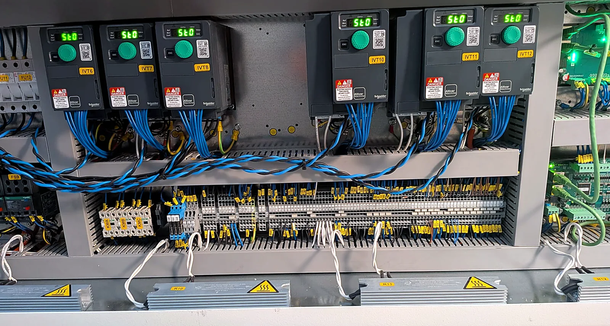

Esigenza tecnica
Rendere disponibili nel sistema gestionale i dati operativi della bordatrice e associarli alla lavorazione in corso.
Realizzazioni industriali · JDEVPRO
Due interconnessioni industriali realizzate nell'ultimo mese: una bordatrice SCM con Maestro Active e CNC Essetre/Tecnoessetre. Qui descriviamo il lavoro effettivamente eseguito; complessivamente JDEVPRO ha collegato 25 macchine in 15 aziende.
Intervento reale · Ultimo mese · Bordatrice SCM
Collegamento tra macchina, eventi di produzione e gestione delle commesse.
Rendere disponibili nel sistema gestionale i dati operativi della bordatrice e associarli alla lavorazione in corso.
Acquisizione di stato e allarmi; commesse aperte e chiuse dalla macchina; importazione automatica delle informazioni di produzione.
Consuntivazione per commessa a partire dai tempi di lavorazione effettivi e dai metri di bordo registrati.
Il riferimento a SCM e Maestro Active identifica la tecnologia integrata, non implica una partnership con il costruttore.
Intervento reale · Ultimo mese · CNC Essetre
Integrazione operativa tra centri CNC e software di produzione.
Gestire macchine e lavorazioni in una vista condivisa, con riferimenti univoci a commesse e file di lavoro.
Visualizzazione di più macchine in un'unica schermata, eventi associati alle commesse e invio dei file di lavorazione.
Gestione di magazzino e residui, con report economici e riepiloghi stampabili collegati alla produzione.
La descrizione è tecnica e anonimizzata; non sono dichiarati tempi risparmiati, ROI o certificazioni fiscali del singolo progetto.
Fotografie dal campo
Foto originali di una macchina interconnessa: il quadro con schede PLC collegate in rete e la sezione con inverter e morsettiere.


Approfondimento dei lavori SCM ed Essetre
Nei due interventi realizzati, il software collega le informazioni delle macchine alla gestione della produzione. Non è un terzo caso indipendente: approfondiamo il lavoro già descritto sopra.
Stato, allarmi, apertura e chiusura commesse, tempi effettivi e metri di bordo alimentano il consuntivo per commessa.
Stato di più centri CNC, invio file di lavorazione, eventi associati alle commesse, magazzino e report economici nello stesso sistema di produzione.
I flussi raccolti in produzione diventano informazioni per avanzamento delle lavorazioni, tracciamento e analisi delle commesse, senza ricopiature manuali.
Interfaccia software
Un esempio del tipo di dati che il sistema può organizzare e rendere consultabili.

Il metodo JDEVPRO
Prima di proporre un intervento verifichiamo marca, modello, interfacce e dati necessari. Dove il gestionale esistente è utilizzabile, sviluppiamo l'integrazione senza sostituirlo.
Seguiamo configurazione, scambio dei dati, collaudo sul funzionamento reale e documentazione tecnica. La valutazione di eventuali agevolazioni resta ai professionisti incaricati.